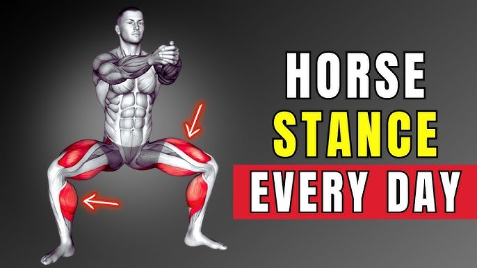

Examples Of Isometric Exercises
- Planks 
- Horse Stance
- Isometric Close Grip Push Ups


Have you ever wondered how farmers are able to outbench bodybuilders without ever going to the gym? How rock climbers were able to break world records against strongmen twice their size? Despite farmers & rock climbers not having anywhere near the same amount of muscles and/or size as the regular gym goer, they are still able to outperform the biggest and most muscular of athletes. How, you may ask? All thanks to the central nervous system.
You probably should know by now, muscles do not necessarily translate to true strength. Having big, dense muscles and a sculpted physique is nice to look at aesthetically and feel good about, but training your muscles will only get you so far. A person's true physical and mental potential lies in training their CNS.
To put it simple, when we train, our brain sends signals to our muscle fibres caused by something called motor units. In order to maximize the effectivity of our training, we need to recruit as many of these motor units as possible, but this is only possible due to the strength of the signal sent from the brain. The stronger the signal, the more motor units are recruited. Weaker signals will recruit only a few of the smaller motor units, as they have a lower activation threshold. This means that by improving the signals of the correct systems, we improve the muscle recruitment and therefore potential strength. But how do we achieve this? Answer: through isometrics.
Isometric training refers to the static contraction of the muscles without moving the surrounding joint.
When bodybuilders and athletes perform isotonic exercises such as barbell lift, they would lift while ramping up the weight over time until they would reach close to failure or to failure and be at their maximum effort. With isometric exercises however, we would already be practicing our maximum efforts right away so we could do our sets longer for more time under tension.
By allowing our body to adapt to the neural pathways formed and stronger signals sent due to mind-to-muscle connection, we would effectively be recruiting a higher % of motor units available and be training much more effectively and with less risk of injury.
Many studies suggest that isometric training provides immense strength, builds muscle mass, provides more safety while performing ballistic movements and greatly speeds up recovery for rehabilitation due to injuries from isotonic exercises.